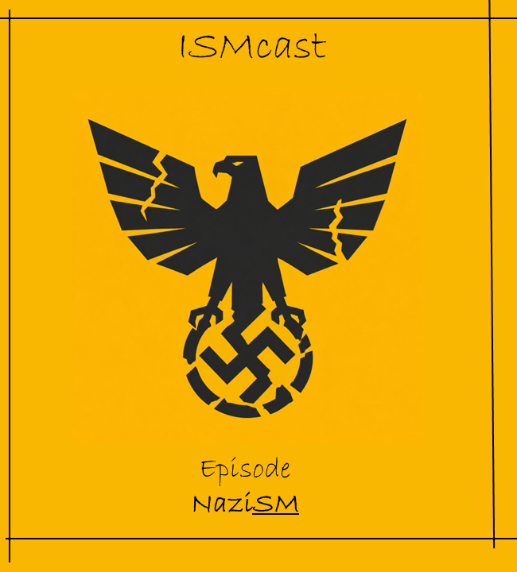

ISMCAST / ایسم کست
ایسمکست از یک سوال ساده حین پیادهروی شروع شد: چرا اینهمه مفهوم مهم در جهان به «ایسم» ختم میشوند؟
داستان تولد ایسمکست و ورود به دنیای پسوندهایی که کلید فهم دنیای امروزند؛ از دل سیاست و فلسفه تا هنر و فرهنگ.

لیبرالیسم از کجا آمد؟ بررسی ریشههای آزادی فردی، حقوق طبیعی و تلاش برای محدود کردن قدرت دولت.

ریشههای کاپیتالیسم؛ بررسی تصویر این مکتب از تولید، ثروت و پیشرفت در نظام اقتصادی مسلط جهان.

رقابت قدرتهای بزرگ برای منابع و بازارها؛ بررسی ضرورتهای اقتصادی سرمایهداری و سلطه بر جهان.

زندگی و تفکرات کارل مارکس؛ مانیفست عصیان طبقاتی، لغو استثمار و موتور محرک انقلابهای بزرگ.

کالبدشکافی سوسیالدموکراسی؛ چطور ایده بازتوزیع ثروت و دولت رفاه توانست سرمایهداری را رام کند؟

از آرمانشهر مارکس تا لنینیسم؛ بررسی نحوه تبدیل رویای جامعه بدون طبقه به متمرکزترین دولتهای تاریخ.

چگونه «ملت» به مهمترین هویت انسان مدرن تبدیل شد؟ تفاوت میهندوستی و ناسیونالیسم افراطی.

چگونه یک ملت آزادی را واگذار میکند؟ بررسی ایتالیای پس از جنگ، ظهور موسولینی و روانشناسی تودهها.

کالبدشکافی ناسیونالسوسیالیسم، ایدئولوژی نژادی و ماشین برپایی جنگ در آلمان قرن بیستم.

تحلیل حکومتهای تمامیتخواه؛ سیطره بر اندیشه، جامعه و ساختار کنترل مطلق انسان.

نفی هرگونه اقتدار و دولت؛ بررسی آرمان جامعه بدون ساختار اجباری برپایه همکاری داوطلبانه.